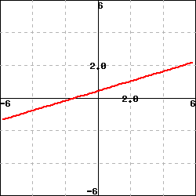

Often in WeBWorK, the graphs are displayed as small thumbnail images. These can be difficult to read, so in these cases, WeBWorK provides you with a link to a larger copy of the graph. You can click on the small version of the image to get the larger one. For example, click on the diagram below to enlarge it. It will be displayed in a separate window; close that window when you are done looking at the larger graph. Graphs in WeBWorK
 After you are done, press the "Back" button to go back to the problem page.